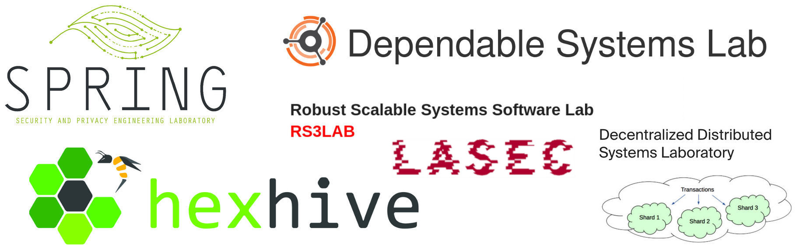

Security @ EPFL
This is the homepage of the Security, Privacy, and Cryptography Group in the School of Computer and Communication Sciences (IC School) at EPFL in Lausanne, Switzerland.
We research a broad range of topics, including privacy enhancing technologies, software security, theoretical and applied cryptography, and blockchain technologies. Our labs are closely connected and often collaborate on research projects, or we get together for social outings and fun interactions.
If you would like to join the IC School as a graduate student, apply to our PhD program or our MSc program (the Master in Cyber Security may be of interest). If you are a recent PhD graduate, we also have positions available for postdoctoral researchers, just drop us a note with your CV, interests, and qualifications.
People
Faculty (and Labs)
- George Candea (DSLAB)
- Alessandro Chiesa (COMPSEC)
- Bryan Ford (DEDIS)
- Jean-Pierre Hubaux (C4DT, LDS)
- Sanidhya Kashyap (RS3Lab)
- Mathias Payer (HexHive)
- Carmela Troncoso (SPRING)
- Serge Vaudenay (LASEC)
Postdocs and Researchers
- Ritam Bhaumik
- Marcel Busch
- Vero Estrada
- Boris Tako Fouotsa
- Gwangmu Lee
- Kavous Salehzadeh Niksirat
- Apostolos Pyrgelis
- Juan Troncoso-Pastoriza
- Dario Pasquini
- Flavio Toffalini
Software Engineers
- Pierluca Borsò
- Noémien Kocher
- Jean Viaene
PhD Students
- Ceyhun Alp
- Nicolas Badoux
- Khashayar Barooti
- Atri Bhattacharyya
- Cristina Basescu
- Andrea Caforio
- Can Cebeci
- Sylvian Chatel
- Daniel Collins
- Simone Colombo
- Luca Di Bartolomeo
- Kasra EdalatNeadkhamene
- Zhiyao Feng
- Georgia Fragkouli
- David Frölicher
- Aymeric Genet
- Ahmad Hazimeh
- Florian Hofhammer
- Loïs Huguenin
- Rishabh Iyer
- Klim Kireev
- Yugesh Kothari
- Bogdan Kulynych
- Tao Lyu
- Philipp Mao
- Laurane Marco
- Louis-Henri Merino
- Christian Mouchet
- Solal Pirelli
- Mathilde Raynal
- Andrés Sanchez
- Sinem Sav
- Theresa Stadler
- Abdullah Talayhan
- Pasindu Tennage
- Bénédikt Tran
- Boya Wang
- Lei Yan
- Chibin Zhang
- Haoqian Zhang
MSc Researchers
- Hossein Moghaddas
- Duo Xu
Academic Alumni
Courses
Undergraduate Courses
Graduate (MSc & PhD) Courses
- COM-401 Cryptography and security
- COM-402 Information security and privacy
- CS-412 Software security
- CS-438 Decentralized systems engineering
- CS-459 Foundations of probabilistic proofs
- COM-501 Advanced cryptography
- COM-506 Student seminar: security protocols and applications
- CS-725 Topics in Language-based Software Security
Events
- PrivaSec Seminar: semesterly gathering among all security people.
